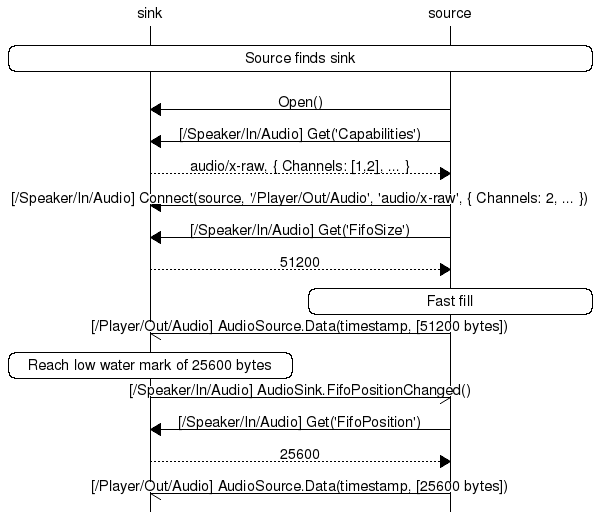
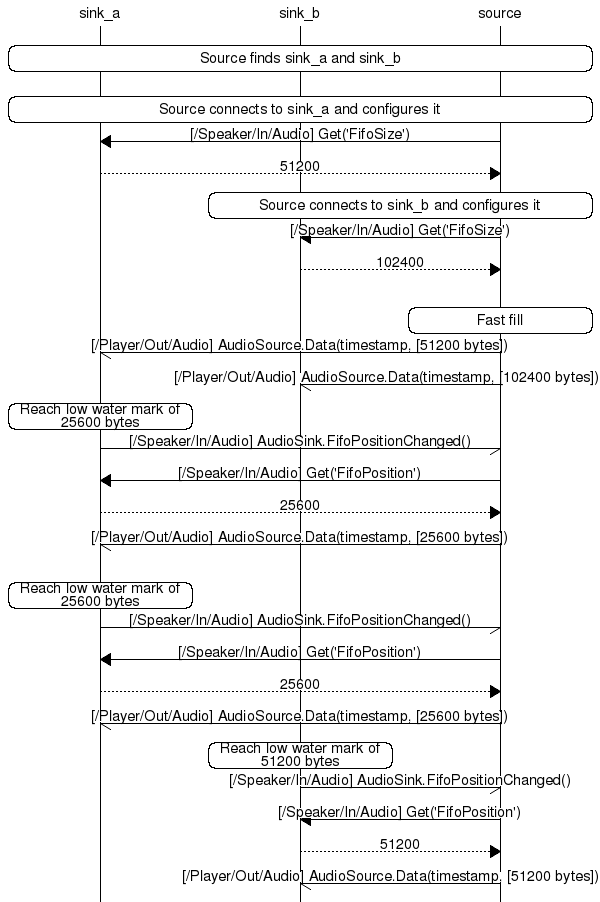

Audio Interface Definition
Release History
| Release version | Date | What changed |
|---|---|---|
| Pre-14.06 | N/A | The following interfaces were added:
|
| 14.06 | 6/30/2014 | No updates |
| 14.06 Update 1 | 9/29/2014 |
Updated the following data points:
Separated the following interfaces to address the information unique to the relevant Sink and Source interfaces:
Updated the Introspection XML to reflect the Control.Volume output. |
| 14.12 | 12/17/2014 | Cleanup to make requirements for methods and signals more clear. |
Definition Overview
A stream consists of one or more elementary streams; an elementary stream consists of one type of media (audio, image, or metadata).
NOTE: All methods and signals are considered mandatory to support the AllSeen Alliance Compliance and Certification program.
Stream Object
A stream object is a BusObject implementing the org.alljoyn.Stream
interface. It has one child port object for each elementary stream.
A port object is a BusObject implementing the org.alljoyn.Stream.Port
interface and one of the media type-specific port interfaces
(org.alljoyn.Stream.Port.AudioSink, etc.). Port objects send or
receive elementary streams.
Example objects and interfaces used by a speaker
- /Speaker/In is a stream object
- /Speaker/In/Audio, /Speaker/In/Image, and /Speaker/In/Metadata are child port objects.
| Object path | Interfaces implemented |
|---|---|
| /Speaker/In | org.alljoyn.Stream |
| /Speaker/In/Audio |
|
| /Speaker/In/Image |
|
| /Speaker/In/Metadata |
|
Example objects and interfaces used by a media player
| Object path | Interfaces implemented |
|---|---|
| /Player/Out | org.alljoyn.Stream |
| /Player/Out/Audio |
|
| /Player/Out/Image |
|
| /Player/Out/Metadata |
|
The following figure illustrates how source ports are connect to sink ports to enable streaming.

Figure: Connected media player and speaker
Typical Stream Flows
One source and one sink
The following figure illustrates a typical call flow for one source and one sink.

Figure: Typical call flow for one source and one sink
One source and two sinks
The following figure illustrates the typical call flow for one source and two sinks.

Figure: Typical call flow for one source and two sinks
Discovery
To be discovered by interested client applications on other devices, an audio implementation advertises its existence using the About feature. See the About Feature Interface Definition for more information.
BusObject paths
Implementations of audio should publish the object paths of the
BusObjects that implement org.alljoyn.Stream and the object paths
of BusObjects that implement the org.alljoyn.Stream.Port interfaces
using the org.alljoyn.About interface. See Example objects and interfaces used by a speaker
and Example objects and interfaces used by a media player
for examples of published BusObjects.
Session port value
In addition to the object paths, the implementation should also
publish the session port value that the service uses to listen
for incoming client connections. Use this port value in the "port"
parameter of the org.alljoyn.About.Announce signal.
Stream Interface
The Stream interface is responsible for stream creation and control over a stream's ports.
Interface name
| Interface name | Version | Secured | Object path |
|---|---|---|---|
org.alljoyn.Stream |
1 | no | Any object path |
Properties
| Property name | Signature | List of values | Read/Write | Description |
|---|---|---|---|---|
| Version | q |
Positive integers | Read-Only | Interface version number |
Methods
The following methods are exposed by a BusObject that implements
the org.alljoyn.Stream interface.
Open
Returns an error if not implemented or called more than once.
Message arguments
None.
Reply arguments
None.
Description
Open the stream.
Close
Returns an error if not implemented or called more than once.
Message arguments
None.
Reply arguments
None.
Description
Close the stream.
Stream.Port Interface
The Stream.Port interface is responsible for control over an elementary stream. A port object implements this interface together with a media-specific port interface such as Stream.Port.AudioSource or Stream.Port.AudioSink.
| Interface name | Version | Secured | Object path |
|---|---|---|---|
org.alljoyn.Stream.Port |
1 | no | Child node of node implementing the Stream interface. |
Properties
| Property name | Signature | List of values | Read/Write | Description |
|---|---|---|---|---|
| Version | q |
Positive integers | Read-only | Interface version number |
| Direction | y |
|
Read-only | Indicates if this port is a source or sink port. Source ports send elementary streams, sink ports receive them. |
| Capabilities | a(sa{sv}) |
See Media Types for more information. | Read-only | Defines the supported capabilities of this port. The capabilities of unknown media types should be ignored. |
Methods
The following methods are exposed by a BusObject that implements
the org.alljoyn.Stream.Port interface.
Connect('so(sa{sv})')
Message arguments
| Argument | Parameter name | Signature | List of values | Description |
|---|---|---|---|---|
| 0 | host |
s |
AllJoyn name | The AllJoyn™ name of the remote stream port host to connect to. |
| 1 | path |
o |
Object path | The AllJoyn object path of the remote port on the host to connect to. |
| 2 | configuration |
(sa{sv}) |
See Media Types | A media type and the values to configure its parameters with. |
Reply arguments
None.
Description
Connects this port to a remote port and configures the ports to send or receive an elementary stream.
If the configuration is not compatible with the capabilities, this method should return an error.
If this port is already connected to the remote port, this method should return an error. To reconfigure a connected port, first close the stream, then open and connect with the new configuration.
Signals
The following signals are emitted by a BusObject that implements
the org.alljoyn.Stream.Port interface.
OwnershipLost('s')
OwnershipLost signal is not a Sessionless signal.
Message arguments
| Argument | Parameter name | Signature | List of values | Description |
|---|---|---|---|---|
| 0 | newOwner |
s |
A String | AllJoyn name of the new remote port. |
Description
The port emits this signal to the currently connected remote port when it connects to a new remote port.
Stream.Port.Audio Interfaces
The Stream.Port.AudioSource and Stream.Port.AudioSink interfaces define the data format for audio/ media. The interfaces are implemented by port objects that support audio/ capabilities.
FIFO control
An audio sink exposes a FIFO to receive streamed data from an audio source. Control of the FIFO is implemented as a state machine. The following figure illustrates the states of the FIFO.

Figure: Audio sink diagram
Filling an audio sink's FIFO is accomplished using the Data signal, FifoSize and FifoPosition properties, and FifoPositionChanged signal. On receipt of each FifoPositionChanged signal, the audio source can send (FifoSize - FifoPosition) more bytes of data. The audio source should not send more than this; doing so can lead to blocking the receipt of other BusMethods and BusSignals by the audio sink, or the audio sink discarding the data.
Use the Flush method to tell the audio sink to discard all the data in its FIFO in preparation for new data.
Synchronization
If an audio sink supports synchronized playback (by implementing the Stream.Clock interface), use the timestamp parameter of the Data signal to determine the correct time to render the data. The audio source computes a timestamp sufficient to ensure that it is greater than the network latency plus the rendering latency of each audio sink. Audio sinks should discard data that cannot be rendered in time.
Stream.Port.AudioSink interface
Interface name
| Interface name | Version | Secured | Object path |
|---|---|---|---|
org.alljoyn.Stream.Port.AudioSink |
1 | no | Child node of node implementing the Stream interface. |
Properties
| Property name | Signature | List of values | Read/Write | Description |
|---|---|---|---|---|
| Version | q |
Positive integers | Read-only | Interface version number |
| FifoSize | u |
Size in bytes | Read-only | The size of the sink's FIFO in bytes. The size in samples may be computed from the configured Channels, Format, and Rate. |
| FifiPosition | u |
Position in bytes | Read-only | The current position of the FIFO in bytes. Bytes read from this position are submitted to the audio device. |
| Delay | (uu) |
|
Read-only | Use the sum of these values and the configured Channels, Format, and Rate properties to compute the delay in seconds from when a sample is received to when it is heard.
|
| PlayState | y |
|
Read-only | The current rendering state. |
Methods
The following methods provide control of the audio sink's FIFO state machine.
u Flush('t')
Message arguments
| Argument | Parameter name | Signature | List of values | Description |
|---|---|---|---|---|
| 0 | timeNanos |
t |
Timestamp in nanoseconds since the UNIX epoch | Timestamp in nanoseconds since the UNIX epoch to flush at.
|
Reply arguments
| Argument | Parameter name | Return signature | Description |
|---|---|---|---|
| 0 | numBytesFlushed |
u |
Number of bytes flushed from the FIFO. When timeNanos is not 0, this value is the number of bytes flushed after the flush is complete. |
Description
Flushes the FIFO of this instance. FifoPositionChanged should be emitted after the flush is complete.
Pause('t')
Mesage arguments
| Argument | Parameter name | Signature | List of values | Description |
|---|---|---|---|---|
| 0 | timeNanos |
t |
Timestamp in nanoseconds since the UNIX epoch | Timestamp in nanoseconds since the UNIX epoch to stop rendering data at.
|
Reply arguments
None.
Description
Tell the port to stop rendering data from the FIFO. The FIFO is not flushed.
Play
Message argumemts
None.
Reply arguments
None.
Description
Tells the port to start rendering data from the FIFO.
If the configuration is not compatible with the capabilities, this method should return an error.
Signals
FifoPositionStateChanged
FifoPositionStateChanged is not a Sessionless signal.
Message arguments
None.
Description
An audio sink emits this signal when its FIFO position crosses the low watermark.
PlayStateChanged('yy')
PlayStateChanged is not a Sessionless signal.
| Argument | Parameter name | Signature | List of values | Description |
|---|---|---|---|---|
| 0 | oldState | y |
positive | Previous PlayState value. |
| 1 | newState | y |
positive | Current PlayState value. |
Description
Emitted when the PlayState property changes.
Stream/Port.AudioSource Interface
Interface name
| Interface name | Version | Secured | Object path |
|---|---|---|---|
org.alljoyn.Stream.Port.Audio |
1 | no | Child node of node implementing the Stream interface. |
Properties
| Property name | Signature | List of values | Read/Write | Description |
|---|---|---|---|---|
| Version | q |
Positive integers | Read-only | Interface version number |
Methods
No methods are exposed by this interface.
Signals
Data('tay')
Data signal is not a Sessionless signal.
| Argument | Parameter name | Signature | List of values | Description |
|---|---|---|---|---|
| 0 | timeStamp |
t |
positive | Timestamp in nanoseconds since the UNIX epoch to render the data. If an audio sink does not support synchronized playback (by not implementing the Stream.Clock interface), this value should be 0. |
| 1 | bytes |
ay |
array of bytes | Interleaved sample data. |
Description
This signal is sent by the audio source to the audio sink.
Stream.Port.Image Interfaces
The Stream.Port.ImageSource and Stream.Port.ImageSink interfaces define the data format for image/ media types. The interfaces are implemented by port objects that support image/ capabilities.
Stream.Port.ImageSink interface
Interface name
| Interface name | Version | Secured | Object path |
|---|---|---|---|
org.alljoyn.Stream.Port.ImageSink |
1 | no | Child node of the node implementing the Stream interface. |
Properties
| Property name | Signature | List of values | Read/Write | Description |
|---|---|---|---|---|
| Version | q |
Positive integers | Read-only | Interface version number |
Methods
No methods are exposed by this interface.
Signals
No signals are emitted by this interface.
Stream.Port.ImageSource interface
Interface name
| Interface name | Version | Secured | Object path |
|---|---|---|---|
org.alljoyn.Stream.Port.ImageSource |
1 | no | Child node of the node implementing the Stream interface. |
Properties
| Property name | Signature | List of values | Read/Write | Description |
|---|---|---|---|---|
| Version | q |
Positive integers | no | Interface version number |
Methods
No methods are exposed by this interface.
Signals
Data is not a Sessionless signal.
Data('ay')
Message arguments
| Argument | Parameter name | Signature | List of values | Description |
|---|---|---|---|---|
| 0 | bytes |
ay |
array of bytes | Segment of the image data. |
Description
This signal is sent by the source to the sink.
Stream.Port.Application.Metadata Interfaces
The Application.MetadataSource and Application.MetadataSink interfaces define the data format for application/x-metadata media types. The interfaces are implemented by port objects that support the application/x-metadata capability.
Stream.Port.Application.MetadataSink interface
Interface name
| Interface name | Version | Secured | Object path |
|---|---|---|---|
org.alljoyn.Stream.Application.MetadataSink |
1 | no | Child node of the node implementing the Stream interface. |
Properties
| Property name | Signature | List of values | Read/Write | Description |
|---|---|---|---|---|
| Version | q |
Positive integers | Read-only | Interface version number |
Methods
No methods are exposed by this interface.
Signals
No signals are emitted by this interface.
Stream.Port.Application.MetadataSource interface
Interface name
| Interface name | Version | Secured | Object path |
|---|---|---|---|
org.alljoyn.Stream.Port.Application.MetadataSource |
1 | no | Child node of the node implementing the Stream interface. |
Properties
| Property name | Signature | List of values | Writable | Description |
|---|---|---|---|---|
| Version | q |
Positive integers | Read-only | Interface version number |
Methods
No methods are exposed by this interface.
Signals
Data('a{sv}')
Data is not a Sessionless signal.
Message arguments
| Argument | Parameter name | Signature | List of values | Description |
|---|---|---|---|---|
| 0 | dictionary |
a{sv} |
array of pairs of a string and variant | Metadata key/value pairs. See Media Types for metadata keys and relevant values. |
Description
This signal is sent by the source to the sink.
Control.Volume interface
Interface name
| Interface name | Version | Secured | Object path |
|---|---|---|---|
org.alljoyn.Control.Volume |
1 | no | Must be the same as the path implementing the AudioSink interface. |
Properties
| Property name | Signature | List of values | Read/Write | Description |
|---|---|---|---|---|
| Version | q |
Positive integers | Read-only | Interface version number |
| Volume | n |
Signed integers | Read-write | Current volume of the device |
| VolumeRange | (nnn) |
Signed integers
|
Read-only | Maximum (high) and minimum (low) values of the volume. The step value is the incremental unit, the value of Volume is always a multiple of the step. |
| Mute | b |
|
Read-write | Whether or not this device is muted. |
| Enabled | b |
|
Read-only | Indicates whether or not Volume control is enabled. If this value is false, all methods that change the playback volume will return an error. |
Methods
The following methods are exposed by a BusObject that implements
the org.alljoyn.VolumeControl interface.
AdjustVolume('n')
Message arguments
| Argument | Parameter name | Signature | List of values | Description |
|---|---|---|---|---|
| 0 | delta |
n | Signed integer | The amount by which to increase or decrease the volume. |
Reply arguments
None.
Description
Adjusts the volume by a certain amount. The new volume will be equal to old volume + delta.
AdjustVolumePercent('d')
Message arguments
| Argument | Parameter name | Signature | List of values | Description |
|---|---|---|---|---|
| 0 | change |
d |
double precision floating point value | For values greater than 0 and smaller than 1, the percentage by which to raise the volume.
|
Reply arguments
None.
Description
Adjusts the volume by a certain percentage.
Signals
VolumeChanged('b')
VolumeChanged signal is not a Sessionless signal.
Message arguments
| Argument | Parameter name | Signature | List of values | Description |
|---|---|---|---|---|
| 0 | newVolume |
b |
|
Emitted when the volume changes |
Description
Signal sent when the volume has changed.
MuteChanged('b')
MuteChanged signal is not a Sessionless signal.
| Argument | Parameter name | Signature | List of values | Description |
|---|---|---|---|---|
| 0 | newMute |
b |
True or False | Emitted when the mute changes to on or off |
Description
Signal sent when the volume's mute state has changed.
EnableChanged('b')
EnableChanged signal is not a Sessionless signal.
| Argument | Parameter name | Signature | List of values | Description |
|---|---|---|---|---|
| 0 | enabled |
b |
True or False | Emitted when when the volume control is enabled or disabled |
Description
Signal sent when the volume control is enabled or disabled.
Stream.Clock interface
The Stream.Clock interface provides the ability to set the clock used for synchronized playback. It can be implemented by a stream object.
The following sequence defines the clock synchronization process.
- Record the current time as t0.
- Call SetTime(t0) and wait for the method reply.
- Record the current time as t1.
- Call AdjustTime((t1 - t0) / 2).
The maximum error of the clock skew is the value passed to AdjustTime, (t1 - t0) / 2.
Interface name
| Interface name | Version | Secured | Object path |
|---|---|---|---|
org.alljoyn.Stream.Clock |
1 | no | Child node of the node implementing the Stream interface. |
Properties
| Property name | Signature | List of values | Read/Write | Description |
|---|---|---|---|---|
| Version | q |
Positive integers | Read-only | Interface version number |
Methods
The following methods are exposed by a BusObject that implements
the org.alljoyn.Stream.Clock interface.
SetTime('t')
Message arguments
| Argument | Parameter name | Signature | List of values | Description |
|---|---|---|---|---|
| 0 | timeNanos |
t |
Timestamp in nanoseconds since the UNIX epoch | The time to set the clock used for synchronized playback. |
Reply arguments
None.
Description
Sets the time of the clock used for synchronized playback.
AdjustTime('x')
Message arguments
| Argument | Parameter name | Signature | List of values | Description |
|---|---|---|---|---|
| 0 | adjustNanos |
x |
Positive or negative time in nanoseconds. | The amount, positive or negative, to adjust the time.
|
Reply argments
None.
Description
Adjusts the time of the clock used for synchronized playback forwards or backwards from its current value.
Signals
No signals are emitted by this interface.
Media Types
The following sections define the values of the (sa{sv}) used in the Stream.Port.Capabilities and Stream.Port.Connect interfaces.
- For a capability, the first parameter of the struct is the media type (such as audio/x-raw). The second parameter is a dictionary of configurable parameters for the media type. The value of the dictionary entry for a configurable parameter is an array of the supported values of the configurable parameter.
- A configuration is identical to a capability except that the value of the dictionary entry for a configurable parameter is only one of the supported values listed in the capability. In addition to the media types defined below, additional media types may be defined in future revisions of this interface definition or in addition to this interface definition.
audio/x-raw
Raw interleaved PCM data. If audio is supported, this media type is mandatory.
| Key | Signature | List of values | Description |
|---|---|---|---|
| Channels | y |
Positive integer | Number of channels. Support for 1 and 2 channels is mandatory. |
| Format | s |
Sample format | Sample formats. s16le - PCM signed 16-bit wide little endian samples. Support for s16le is mandatory. |
| Rate | q |
Sample rate | Sample rate. Support for 44100 and 48000 sample rates is mandatory. |
audio/x-alac
Apple Lossless. Support for this media type is optional.
| Key | Signature | List of values | Description |
|---|---|---|---|
| Channels | y |
Positive integer | Number of channels. Support for 1 and 2 channels is mandatory. |
| Format | s |
Sample format | Sample formats. s16le - PCM signed 16-bit wide little endian samples. Support for s16le is mandatory. |
| Rate | q |
Sample rate | Sample rate. Support for 44100 and 48000 sample rates is mandatory. |
| MagicCookie | ay |
Array of bytes | Magic cookie. Used only in configuration. |
| FramesPerPacket | u |
Frames per packet | Frames per packet. Used only in configuration. |
image/jpeg
JPEG image data. Support for this media type is optional.
application/x-metadata
Stream metadata. Support for this media type is optional.
Media Item Keys
The following table lists the keys and values that can be used in a metadata dictionary entry.
Date values are to only be represented as strings in one of the following ISO 8601 formats:
- Year only: "<year>" where <year> includes all digits of the year.
- Date: "<year><month><day>" where:
- <year> includes all digits of the year
- <month> is a 2-digit representation of month ("01" = January)
- <day> is the day of the month (e.g., "09").
- Date and time: "<year><month><day>T<hour><minute><second>+/-<offset>" where:
- <year>, <month>, and <day> are the same as the date previously specified
- <hour> is the hour ("00" through "23")
- <minute> is the minute ("00" through "59")
- <second> is the second ("00" through "59")
- <offset> is the offset from UTC ("-0800" corresponds to Pacific Standard Time)
- Date and time: "<year><month><day>T<hour><minute>+/-<offset>"
is the same as the previous date and time specification except
without the
(seconds) portion.
| Key | Signature | List of values | Description |
|---|---|---|---|
| Name | s |
N/A | Name or title of the item |
| Album | s |
N/A | Album title |
| AlbumArtist | s |
N/A | Album artist |
| AlbumRating | y |
0-5 | "Start" rating |
| Artist | s |
N/A | Artist that performed the item |
| Bpm | g |
N/A | Beats per minute |
| Compilation | b |
N/A | Indicates if item is part of a compilation |
| Composer | s |
N/A | Composer of the item |
| DiscCount | g |
N/A | Total number of discs in a multi-disc release |
| DiscNumber | g |
N/A | Disc number in a multi-disc release |
| Duration | u |
N/A | Duration of the item in milliseconds |
| Genre | s |
N/A | Genre of the item |
| Rating | y |
0-5 | "Star" rating |
| ReleaseDate | s |
Date | Date item was first released |
| TrackCount | g |
N/A | Total number of tracks on the album |
| TrackNumber | g |
N/A | Track number of the item within the album |
Introspection XML
<node xmlns:xsi="http://www.w3.org/2001/XMLSchema-instance"
xsi:noNamespaceSchemaLocation="http://www.allseenalliance.org/schemas/introspect.xsd">
<interface name="org.alljoyn.Stream">
<property name="Version" type="q" access="read"/>
<method name="Open"/>
<method name="Close"/>
</interface>
<interface name="org.alljoyn.Stream.Port">
<property name="Version" type="q" access="read"/>
<property name="Direction" type="y" access="read"/>
<property name="Capabilities" type="a(sa{sv})" access="read"/>
<signal name="OwnershipLost">
<arg name="newOwner" type="s"/>
</signal>
<method name="Connect">
<arg name="host" type="s" direction="in"/>
<arg name="path" type="o" direction="in"/>
<arg name="configuration" type="(sa{sv})" direction="in"/>
</method>
</interface>
<interface name="org.alljoyn.Stream.Port.AudioSink">
<property name="Version" type="q" access="read"/>
<property name="FifoSize" type="u" access="read"/>
<property name="FifoPosition" type="u" access="read"/>
<property name="Delay" type="(uu)" access="read"/>
<signal name="FifoPositionChanged"/>
<property name="PlayState" type="y" access="read"/>
<signal name="PlayStateChanged">
<arg name="oldState" type="y"/>
<arg name="newState" type="y"/>
</signal>
<method name="Play"/>
<method name="Pause">
<arg name="timeNanos" type="t" direction="in"/>
</method>
<method name="Flush">
<arg name="timeNanos" type="t" direction="in"/>
<arg name="numBytesFlushed" type="u" direction="out"/>
</method>
</interface>
<interface name="org.alljoyn.Stream.Port.AudioSource">
<property name="Version" type="q" access="read"/>
<signal name="Data">
<arg name="timestamp" type="t"/>
<arg name="bytes" type="ay"/>
</signal>
</interface>
<interface name="org.alljoyn.Stream.Port.ImageSink">
<property name="Version" type="q" access="read"/>
</interface>
<interface name="org.alljoyn.Stream.Port.ImageSource">
<property name="Version" type="q" access="read"/>
<signal name="Data">
<arg name="bytes" type="ay"/>
</signal>
</interface>
<interface name="org.alljoyn.Stream.Port.Application.MetadataSink">
<property name="Version" type="q" access="read"/>
</interface>
<interface name="org.alljoyn.Stream.Port.Application.MetadataSource">
<property name="Version" type="q" access="read"/>
<signal name="Data">
<arg name="dictionary" type="a{sv}"/>
</signal>
</interface>
<interface name="org.alljoyn.Stream.Clock">
<property name="Version" type="q" access="read"/>
<method name="SetTime">
<arg name="timeNanos" type="t" direction="in"/>
</method>
<method name="AdjustTime">
<arg name="adjustNanos" type="x" direction="in"/>
</method>
</interface>
<interface name="org.alljoyn.Control.Volume">
<property name="Version" type="q" access="read"/>
<property name="Volume" type="n" access="readwrite"/>
<property name="VolumeRange" type="(nnn)" access="read"/>
<property name="Mute" type="b" access="readwrite"/>
<signal name="VolumeChanged">
<arg name="newVolume" type="n"/>
<signal name="MutedChanged">
<arg name="newMute" type="b"/>
</signal>
<method name="AdjustVolume">
<arg name="delta" type="n" direction="in"/>
</method>
<method name="AdjustVolumePercent">
<arg name="change" type="d" direction="in"/>
</method>
<property name="Enabled" type="b" access="read"/>
<signal name="EnableChanged">
<arg name="enabled" type="b"/>
</signal>
</interface>
</node>